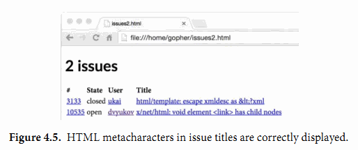

4.6. 文本和HTML模板
前面的例子，只是最简单的格式化，使用Printf是完全足够的。但是有时候会需要复杂的打印格式，这时候一般需要将格式化代码分离出来以便更安全地修改。这写功能是由text/template和html/template等模板包提供的，它们提供了一个将变量值填充到一个文本或HTML格式的模板的机制。
一个模板是一个字符串或一个文件，里面包含了一个或多个由双花括号包含的{{action}}对象。大部分的字符串只是按面值打印，但是对于actions部分将触发其它的行为。每个actions都包含了一个用模板语言书写的表达式，一个action虽然简短但是可以输出复杂的打印值，模板语言包含通过选择结构体的成员、调用函数或方法、表达式控制流if-else语句和range循环语句，还有其它实例化模板等诸多特性。下面是一个简单的模板字符串：
gopl.io/ch4/issuesreport
const templ = `{{.TotalCount}} issues:
{{range .Items}}----------------------------------------
Number: {{.Number}}
User: {{.User.Login}}
Title: {{.Title | printf "%.64s"}}
Age: {{.CreatedAt | daysAgo}} days
{{end}}`
这个模板先打印匹配到的issue总数，然后打印每个issue的编号、创建用户、标题还有存在的时间。对于每一个action，都有一个当前值的概念，对应点操作符，写作“.”。当前值“.”最初被初始化为调用模板时的参数，在当前例子中对应github.IssuesSearchResult类型的变量。模板中{{.TotalCount}}对应action将展开为结构体中TotalCount成员以默认的方式打印的值。模板中{{range .Items}}和{{end}}对应一个循环action，因此它们直接的内容可能会被展开多次，循环每次迭代的当前值对应当前的Items元素的值。
在一个action中，|操作符表示将前一个表达式的结果作为后一个函数的输入，类似于UNIX中管道的概念。在Title这一行的action中，第二个操作是一个printf函数，是一个基于fmt.Sprintf实现的内置函数，所有模板都可以直接使用。对于Age部分，第二个动作是一个叫daysAgo的函数，通过time.Since函数将CreatedAt成员转换为过去的时间长度：
func daysAgo(t time.Time) int {
return int(time.Since(t).Hours() / 24)
}
需要注意的是CreatedAt的参数类型是time.Time，并不是字符串。以同样的方式，我们可以通过定义一些方法来控制字符串的格式化（§2.5），一个类型同样可以定制自己的JSON编码和解码行为。time.Time类型对应的JSON值是一个标准时间格式的字符串。
生成模板的输出需要两个处理步骤。第一步是要分析模板并转为内部表示，然后基于指定的输入执行模板。分析模板部分一般只需要执行一次。下面的代码创建并分析上面定义的模板templ。注意方法调用链的顺序：template.New先创建并返回一个模板；Funcs方法将daysAgo等自定义函数注册到模板中，并返回模板；最后调用Parse函数分析模板。
report, err := template.New("report").
Funcs(template.FuncMap{"daysAgo": daysAgo}).
Parse(templ)
if err != nil {
log.Fatal(err)
}
因为模板通常在编译时就测试好了，如果模板解析失败将是一个致命的错误。template.Must辅助函数可以简化这个致命错误的处理：它接受一个模板和一个error类型的参数，检测error是否为nil（如果不是nil则发出panic异常），然后返回传入的模板。我们将在5.9节再讨论这个话题。
一旦模板已经创建、注册了daysAgo函数、并通过分析和检测，我们就可以使用github.IssuesSearchResult作为输入源、os.Stdout作为输出源来执行模板：
var report = template.Must(template.New("issuelist").
Funcs(template.FuncMap{"daysAgo": daysAgo}).
Parse(templ))
func main() {
result, err := github.SearchIssues(os.Args[1:])
if err != nil {
log.Fatal(err)
}
if err := report.Execute(os.Stdout, result); err != nil {
log.Fatal(err)
}
}
程序输出一个纯文本报告：
$ go build gopl.io/ch4/issuesreport
$ ./issuesreport repo:golang/go is:open json decoder
13 issues:
----------------------------------------
Number: 5680
User: eaigner
Title: encoding/json: set key converter on en/decoder
Age: 750 days
----------------------------------------
Number: 6050
User: gopherbot
Title: encoding/json: provide tokenizer
Age: 695 days
----------------------------------------
...
现在让我们转到html/template模板包。它使用和text/template包相同的API和模板语言，但是增加了一个将字符串自动转义特性，这可以避免输入字符串和HTML、JavaScript、CSS或URL语法产生冲突的问题。这个特性还可以避免一些长期存在的安全问题，比如通过生成HTML注入攻击，通过构造一个含有恶意代码的问题标题，这些都可能让模板输出错误的输出，从而让他们控制页面。
下面的模板以HTML格式输出issue列表。注意import语句的不同：
gopl.io/ch4/issueshtml
import "html/template"
var issueList = template.Must(template.New("issuelist").Parse(`
<h1>{{.TotalCount}} issues</h1>
<table>
<tr style='text-align: left'>
<th>#</th>
<th>State</th>
<th>User</th>
<th>Title</th>
</tr>
{{range .Items}}
<tr>
<td><a href='{{.HTMLURL}}'>{{.Number}}</a></td>
<td>{{.State}}</td>
<td><a href='{{.User.HTMLURL}}'>{{.User.Login}}</a></td>
<td><a href='{{.HTMLURL}}'>{{.Title}}</a></td>
</tr>
{{end}}
</table>
`))
下面的命令将在新的模板上执行一个稍微不同的查询：
$ go build gopl.io/ch4/issueshtml
$ ./issueshtml repo:golang/go commenter:gopherbot json encoder >issues.html
图4.4显示了在web浏览器中的效果图。每个issue包含到Github对应页面的链接。

图4.4中issue没有包含会对HTML格式产生冲突的特殊字符，但是我们马上将看到标题中含有&和<字符的issue。下面的命令选择了两个这样的issue：
$ ./issueshtml repo:golang/go 3133 10535 >issues2.html
图4.5显示了该查询的结果。注意，html/template包已经自动将特殊字符转义，因此我们依然可以看到正确的字面值。如果我们使用text/template包的话，这2个issue将会产生错误，其中“<”四个字符将会被当作小于字符“<”处理，同时“<link>”字符串将会被当作一个链接元素处理，它们都会导致HTML文档结构的改变，从而导致有未知的风险。
我们也可以通过对信任的HTML字符串使用template.HTML类型来抑制这种自动转义的行为。还有很多采用类型命名的字符串类型分别对应信任的JavaScript、CSS和URL。下面的程序演示了两个使用不同类型的相同字符串产生的不同结果：A是一个普通字符串，B是一个信任的template.HTML字符串类型。

gopl.io/ch4/autoescape
func main() {
const templ = `<p>A: {{.A}}</p><p>B: {{.B}}</p>`
t := template.Must(template.New("escape").Parse(templ))
var data struct {
A string // untrusted plain text
B template.HTML // trusted HTML
}
data.A = "<b>Hello!</b>"
data.B = "<b>Hello!</b>"
if err := t.Execute(os.Stdout, data); err != nil {
log.Fatal(err)
}
}
图4.6显示了出现在浏览器中的模板输出。我们看到A的黑体标记被转义失效了，但是B没有。

我们这里只讲述了模板系统中最基本的特性。一如既往，如果想了解更多的信息，请自己查看包文档：
$ go doc text/template
$ go doc html/template
练习 4.14： 创建一个web服务器，查询一次GitHub，然后生成BUG报告、里程碑和对应的用户信息。